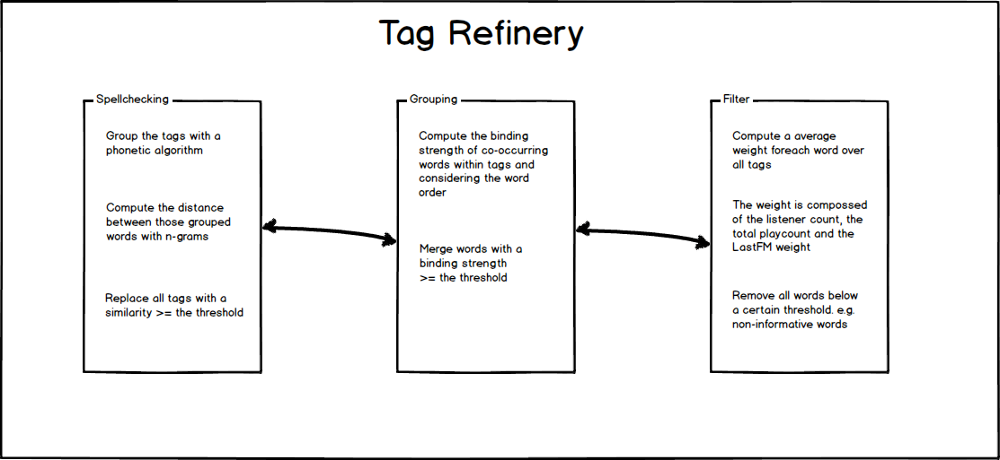
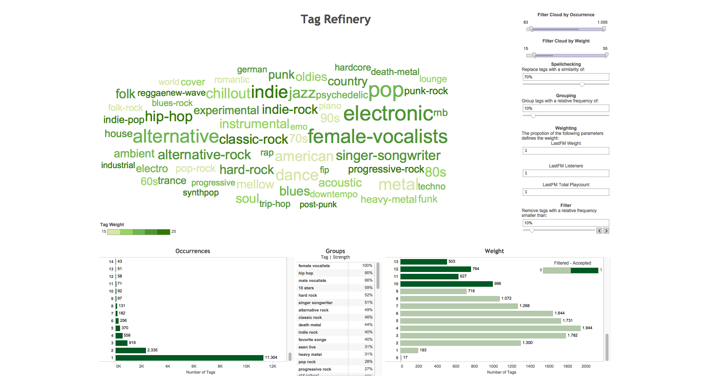
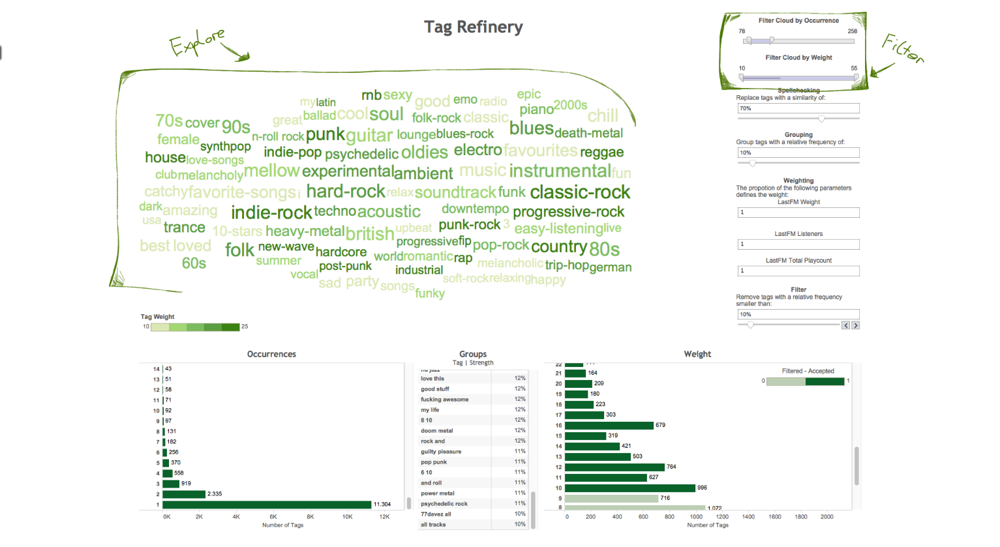
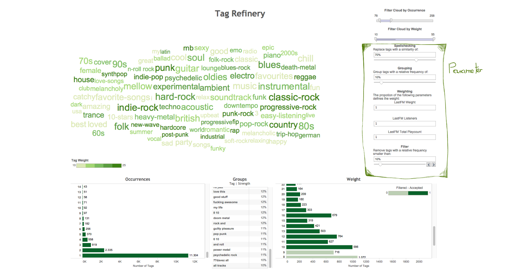
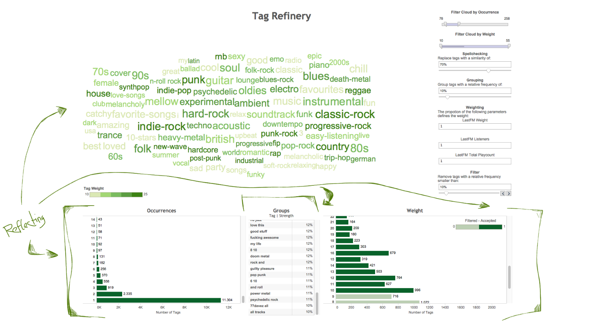

Goto Mockups
Group
Christoph Kralj - a1031064@unet.univie.ac.at
Expertise
- Working now around half a year with social music tags.
- Decent Java knowledge.
Description
Tag Refinery is a visual supported social tag cleaning tool. In today's world we can find everywhere tags: movies, music, papers and many more. Those should help us find want we want or
help us finding new interesting things. Here I am going to use the million song database as dataset for Tag Refinery to improve the quality of the tags. Why? Social tags like those
in last.fm give additional information but with the drawback of having no strict rules about language, spelling or the meaning of a word. That adds a lot of noise to the information that
the tags would provide. Especially if you want to get deeper insight into the given topic its important to find spelling error, synonyms and words which are connected.
Doing this clean-up is no easy task and this tool should support it with an visual interface. The visualization should help the user deciding with parameters are the correct ones for his
problem e.g. tags. The cleaning pipeline consists of three different parts and each part has a set of parameters.
Goals
The whole visualization should provide the user with all informations needed to decide with parameter combination leads to the best output. The underlying algorithm has three parts:
- Removing spelling errors: The tool should give the user direct feedback which words are going to be substituted by the algorithm given the chosen parameters.
- Finding word groups: Another important part is finding words which should be grouped, like "hard-rock" instead of "hard" and "rock".
- Removing non informative tags: At this point each tag gets an weight which takes into account the listeners, total playcount and the lastfm weight. Tags with a value below a certain threshold will be removed.

Implementation

The current interface is the product of three Feedback-Refinment steps. The first step was the implementation and my own first steps with the inteface. After that i
showed it to a colleague, got feedback and reworked the interface. The last step was another Feedback-Refinement step.
Feedback:
- I tried to use a heatmap as group representation. The feedback showed that the heatmap is hard to interpret and the users preferred a simple list.
- The naming of the parameters on the right side was the next big issue. For non-computer scientists was unclear how the [0,1] range works. Thats the reason i changed the parameters to percent. Which got far better feedback. This improved further after I changed the grouping strength visualization to percent.
- I changed the names of the parameters to improve the understandability.
- First i had no graph for the occurrences of the tags. This graph provides additional information for the user to improve his tag cloud interation.
- I removed the replaced words graph. The feedback was that it gives not that much information and clutters the interface.
The two bar graphs show the distribution (as histrogram) of the occurrences and the weight over all tags. The overall feedback was very good and especially the tag cloud seems to be a good way of exploring a tag space.
Workflow
Step 1

The first step is the exploration of the current state (default at the beginning). The tag cloud provides information about the current tag space state. The two filter (by occurrence and weight) give the user control over what the cloud shows. He might search for all tags with a high weight. Or tags with a low occurrence and a high weight. Big tags occurring more often and dark green tags have a higher weight. The user has to decide if the current state is what he whats.
Step 2

The two bar charts give additional informations about occurrence and weight. The user might decide to decrease the filter threshold because their are too many tags filtered. From this point the user can change the parameters on the right side. The groups list gives information about all the groups sorted by their strength. Maybe he sees that "and roll" is grouped what is not really a group. Again he can change the group parameter accordingly to improve the tag quality.
Step 3

Changing the parameters refreshes the tag cloud the the user can check the resulting tag cloud. Again the three lower plots give instant feedback how the overall state has changed. If that looks ok the user can explore the cloud further with the filters. From this point the user iterates through those three steps until the has a solution which suits his needs.
Implementation Tools and Languages
I am going to use Tableau and Java. My tools are Vim, Eclipse and Tableau. The reason I use this combination is that I can focus on the visualization and not on the implementation.
Questions
- Which information is needed to move through the tag space. Provide the three graphs enough information?
- Is the naming of the parameters clear?
- Is a list the best representation for the groups?
Milestones
- Week 11: Creating the workbooks (Done)
- Week 12: Merging them into a dashboard and adding the global links/filter... (Done)
- Week 13: Reflecting colors, arrangement and chosen visualizations (Done)
- Week 14: M2 Presentation
- Week 15: Reflecting and implementing feedback from M2
- Week 16: Refinements
- Week 17: Final Presentation